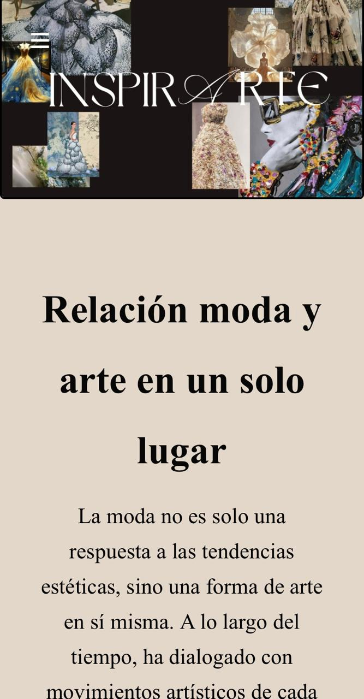
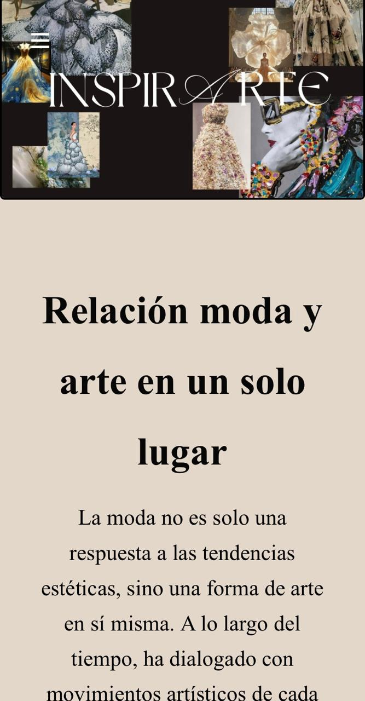

.png)
Momento 4 (100% Plus)
Alumna: Trinidad Maruff
Profesor: Wenceslao Zavala
Materia: Contenidos y creatividad
¿De qué trata la página?

InspirArte es una plataforma que celebra el arte presente en la moda, y cómo esta puede transmitir identidad, cultura y emociones.
Objetivos

En un mundo donde la moda y el arte se entrelazan cada vez más, InspirArte surge como un espacio para destacar esa conexión. Esta plataforma no solo informa, sino que busca inspirar, fomentar una comunidad y generar una experiencia estética que celebre la creatividad en todas sus formas.
- Difundir la relación entre moda y arte
- Ofrecer contenido informativo sobre la relación moda-arte
- Fomentar una comunidad interesada en estos dos mundos
- Ofrecer una experiencia web informativa, atractiva y accesible.
Acerca de:
Conocenos
InspirArte es una plataforma que explora el vínculo entre la moda y el arte. Presenta artículos, referencias a movimientos artísticos y ejemplos de su influencia en el diseño de indumentaria, junto con una galería visual que destaca prendas inspiradas en el arte.

Páginas de inicio Web y Móvil
 

Diseño y fundamentación
- Diseño visual centrado en lo editorial
- Uso de imágenes expresivas y artísticas
- Estilo visual coherente con el nombre del proyecto
- Moda como forma de expresión artística
- Accesibilidad e inspiración

Wireframe escritorio
Boceto de la página web, realizado al comienzo de la cursada. Se fue modificando a lo largo de las clases.


Wireframe móvil
Boceto de la página web, realizado al comienzo de la cursada. Se fue modificando a lo largo de las clases.


Proceso de desarrollo

Wireframe para definir la estructura visual.
HTML y CSS, aplicando una estética limpia y elegante.
Se adaptó a distintos dispositivos usando flexbox y media queries.
Menú hamburguesa para mejorar la experiencia en celulares.

Ajustes finales a partir de observaciones y pruebas de uso.
Presupuesto
Resumen general del presupuesto teniendo en cuenta los puntos pedidos.
Para calcular el presupuesto del sitio InspirArte, consideré el trabajo realizado:
- $15 USD por hora
- 5 horas por semana
- Durante 12 semanas (3 meses)
- 15 × 5 = 75 USD por semana
- 75 × 12 semanas = 900 USD en total
Entonces:
Criterios para la distribución del presupuesto
Para asignar el valor a cada tarea, consideré dos factores:
- Tiempo estimado de realización
- Impacto en el resultado final del sitio